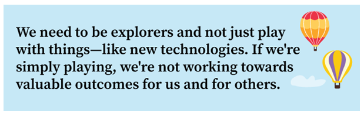
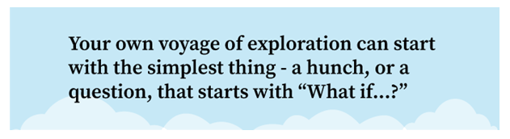
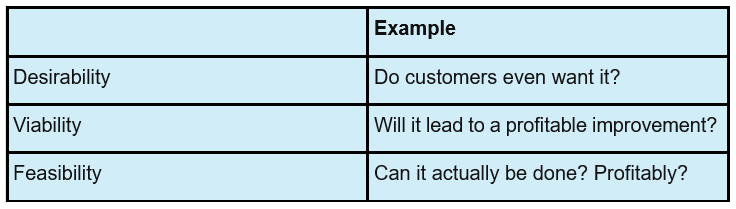

Getting started doesn't have to be complicated. Ask yourself...
What issues have we been simply "dealing with"?
What processes or activities frustrate you or others?
What areas in your work are begging for innovation?
As you go on a voyage of exploration, you ofte discover things you set out to learn but you often learn other things too.

Ideas for Action
To get primed, take a look at the Experimental Discovery Principle in Brief, and then consider the following questions:
Are there processes or systems you use that haven't been improved because they "aren't broke"?
If you could magically change or improve just one thing tomorrow, what would it be? How could you explore ways to improve it?
Discuss these with your supervisor and/or team. What's the estimated value of making these improvements? Are they worth pursuing?
Resources
Experimentation and Experimental Discovery
As commentator George Will reminded us: “The future has a way of arriving unannounced.” In our rapidly changing world, competitors are constantly improving and what customers value is constantly changing. No matter how superior a company’s knowledge, products and services, it cannot stay in business unless it makes improvements and innovations at least as fast as its most effective competitors. To do this successfully requires that a business apply experimental discovery and creative destruction to its vision, strategies, products, services and methods. All businesses must continually innovate, which usually involves numerous changes in direction, leading to the discovery of new paths.
Progress – whether in business, an economy or science – comes through experimentation and failure. Those who favor a “grand plan” over experimentation don’t understand the role that failed experiments play in creating progress in society. As Einstein taught, “Someone who has never made a mistake has never tried anything new.”
Such failures can effectively signal what doesn’t work. When dealt with quickly and efficiently, they minimize waste and redirect scarce resources to what does work. A market economy is an experimental discovery process in which business failures are inevitable. Any attempt to eliminate them only ensures even greater failures.For experimental discovery to work, we have to design experiments properly and recognize when we are experimenting, so we can learn and limit the bet accordingly. Organization companies have suffered whenever we didn’t recognize we were experimenting and made bets as if the risks were small when they were not.
Since the future is unknown, we can never predict with certainty which investments will be profitable. To drive creative destruction, we encourage numerous well-designed experiments to determine which new businesses, products, services, processes, methods or type of organization will be successful. We also limit the size of experiments by considering the risk and magnitude of gain or loss.
A well-designed experiment starts with a hypothesis and the goal of learning whether or not it is valid. If done properly, it leads to new knowledge that brings about change, even if our assumptions or hypotheses are disproven. We learn even more when we explore a range of possibilities that includes the areas of greatest uncertainty and potential.
Confusing as it might seem, failure and getting results are not mutually exclusive. As Einstein observed, “Failure is success in progress.” A failed but well-designed experiment is valuable if it generates lessons that lead to positive results. A true failure is a failure to learn because of poorly planned or impulsive action.
To encourage experimental discovery, we don’t penalize well-planned experiments that fail since they fuel the necessary flow of small and frequent bets that generate discovery and learning. This is vital to innovation, growth and long-term profitability. It is also motivating, as experimenting to discover new ways to create value makes work more interesting and exciting.

Grand plans are about having everything all mapped out, with your final destination already in mid before you begin - but experimental discovery is about taking a step, learning and then determining the NEXT step. Here are some examples:
Here are some things YOU can do to take the NEXT STEP and pursue your "What if...?
1) Sketch something on a whiteboard and show others
2) Talk to your supervisor or coworkers
3) Check out an online forum related to the idea
4) Search the internet or GenAI
5) Make a quick example using what you already have on hand
6) Find someone who might have expertise to help guide you
7) Be willing to kill the idea or pivot after each step
Idea for Action: Using the above list, identify a next step you can take for an idea you have and then give it a try.

The world is full of discoveries that are the result of people paying attention to, and learning from, “happy accidents.” Being open to the unexpected is part of the experimental discovery mindset.
The focus on learning instead of proving can be a paradigm shift for many of us. This is important because it can help us avoid common decision traps.
Example: Josie has a hunch that there is a better way to communicate updates between shift changes and has been encouraged to do a little bit more exploring. She asks a few people to try using a digital whiteboard to leave each other notes and updates. After two days, people just stop using it.
Questions for Discussion
1) Think about the last few times you tried something new. What did you learn from the experience? Who did you tell what you learned?
2) What are some signs that we're more prone to focus on proving instead of learning when we try new things?
Well-designed experiments help us define what we are trying to discover and make good decisions about where to spend our limited resources.
Some Elements of a Well-Designed Experiment
Develop a hypothesis
At the heart of a good experiment is a clear hypothesis that is laid out before you begin the test. A simple cause-and-effect phrase usually does the job:
"If [I do this], then [this] will happen."
Example:
“If I leave my house 15 minutes early, then I’ll miss the worst of the traffic and cut out 35 minutes of gridlock.”
Identify the type of question to answer
You can use these three categories to think broadly about how you might frame the question you are trying to answer.

Define the scope
Limit the variables you are testing. We tend to think that loading up an experiment with lots of variables will save us time, but unnecessary complexity keeps us from reliably learning what we need to learn. Keep it as simple as possible.
Remember, the purpose is to learn. If the results prove your hypothesis incorrect, that is valuable knowledge. As long as you learn, it’s still a good outcome!
Resources
If all of this feels daunting, don't panic! There are resources available to help you experiment effectively at the KGS Experimentation Hub.
Experimental discovery and experimentation are essential as we strive to transform how we create value.
“Transformation doesn’t mean doing what we’ve been doing a little better or faster. It means doing things in entirely new ways, such as: creating new and better products and services, using new technology, combining existing methods and technologies in new ways, significantly reducing the resources consumed and eliminating unprofitable activities.”
Principles in Brief
Transformation
Not only is our world rapidly changing, the rate of change is accelerating. We have long emphasized the importance of continuous improvement; however, today we need more than that. We need continual transformation which requires a heightened sense of urgency. If we do not continually transform, creative destruction and entropy will overwhelm us, and we will fail.
Transformation doesn’t mean doing what we’ve been doing a little better or a little faster. It means doing things in entirely new ways, such as: creating new and better products and services, using new technology, combining existing methods and technologies in new ways, significantly reducing the resources consumed and eliminating unprofitable activities. None of these happen without employees who are contribution motivated. For every innovation there is an innovator – and likely many contributors. For every improvement there are employees with the initiative, ideas and skills to make it happen.
Transformation also requires building knowledge networks to inform us of methods, technologies and trends from anywhere in the world that might improve, disrupt or destroy what we do today. These knowledge-sharing networks, both internal and external, along with reality-based measures and well-designed experiments, are critical to achieving the necessary rate of transformation. If we are protectionist and close ourselves off from competition or innovation we will become obsolete.
Transformations only come about if we transform ourselves. This starts with a willingness to undergo the most difficult and painful of all changes: changing our paradigms. Developing new paradigms and habits based on principles of human progress involves focused and prolonged effort. Consider what’s required for a bodybuilder to transform into a marathon runner. Long-term success also entails continually seeking help to acquire new knowledge and skills. Being a lifelong learner is essential.
Our organization is transformed when we continually develop and update its vision, strategies, capabilities, products and services to create superior value and satisfy unmet needs. This is only possible in an entrepreneurial culture where employees are eager and willing to drive transformation from the bottom up rather than waiting for a top-down grand plan. While some transformations are big leaps forward, many are the cumulative result of employees continually challenging and pushing themselves and their teams to find new ways to create value.
Organization's transformations have always depended on employees who are contribution motivated – who know that no matter how well we (as a company or individuals) are performing today, we can always do better. If we dedicate ourselves to understanding and applying the principles of human progress to continually transform ourselves and our organizations, we can accomplish more and have better lives than we ever imagined.
Personal Transformation
On a personal level, we can limit our ability to grow and contribute when we view opportunities through a narrow lens of existing skills and interests.
Embracing experimental discovery and being open to learning and exploring new things (or applying what we know in new and different ways) can help us break free of these limitations.
Examples:
Questions for Reflection and Action
1) What beliefs might you have about your skills and abilities that could be holding you back?
2) Where can you experiment with new and different ways to contribute to the team or the company?